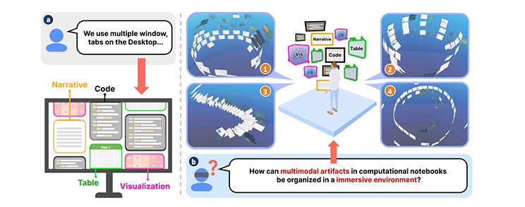
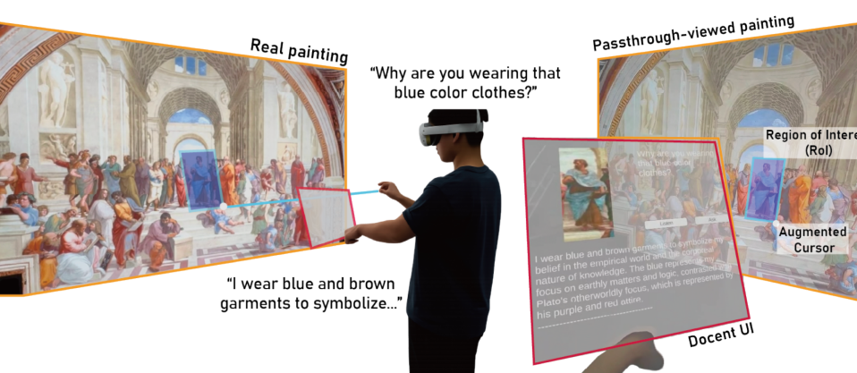
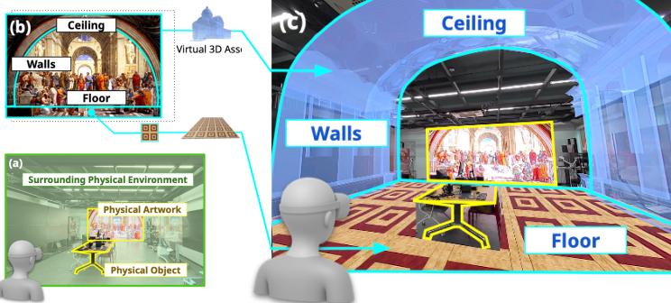

Minju Baeck
Ph.D. Candidate, KAIST
I explore how to make inaccessible sensory information perceivable and actionable.
My research focuses on cross-modal interaction, multisensory XR, and human–AI interfaces, designing new ways for people to perceive, understand, and interact with digital information.
Ubiquitous Virtual Reality Lab · Advised by Prof. Woontack Woo & Prof. Sang-Ho Yoon
Education
KAIST
Ph.D. Candidate, Graduate School of Culture Technology
UVR Lab · Advisors: Prof. Woontack Woo & Prof. Sang-Ho Yoon
KAIST
M.S., Graduate School of Culture Technology
UVR Lab · Advisor: Prof. Woontack Woo
Chungnam National University
B.S. Physics · B.F.A. Creative Design
Experience
3D Interaction Group (Virginia Tech), Visiting Researcher
Supervisor: Prof. Doug Bowman
Expressive Computing Lab (UNIST), Intern
Supervisor: Prof. Kyungho Lee
- Designed elderly-centered interaction scenarios through focus group interviews.
- Prototyped AI-powered social robots using IBM Design Thinking.
Human-Centered Intelligence Systems Lab (GIST), Intern
Supervisor: Prof. SeungJun Kim
- Analyzed biometric and gaze data for autonomous shuttle interfaces.
- Developed VR exhibition content, showcased at the Gwangju Biennale.
Electronics and Telecommunications Research Institute (ETRI), Intern
- Measured Laser Diode and RF Equipment, and conducted Data Visualization.
Leadership & Community
Global Shapers
Vice Curator (2025–26)
GDG Daejeon/KAIST
Member
KAIST CT Student Association
President
LG Global Challenger
Deputy Chief of Staff
Physics Student Association
President
Midam Education Volunteer Association
President
College of Natural Sciences Student Council
Member
Skills
Unity · C# · Meta Quest · HoloLens
Arduino · Sensors · Rapid Prototyping
User Studies · Experimental Design · Statistical Analysis
Figma · Adobe CC · 3D / Interaction Design
Selected Works

Publications
View all publications on Google Scholar →Sharing Roughness with Hand-Outline Visualization to Reduce Sensory Asymmetry in VR Collaboration
IEEE Transactions on Visualization and Computer Graphics (TVCG). (IEEE ISMAR 2026)

IEEE Transactions on Visualization and Computer Graphics (TVCG). (IEEE ISMAR 2026)
Event-Based Referred Vibrotactile Feedback for Bare-Hand XR Interaction
IEEE Transactions on Visualization and Computer Graphics (TVCG). (IEEE VR 2026)
IEEE Transactions on Visualization and Computer Graphics (TVCG). (IEEE ISMAR 2025)
Whirling Interface: Hand-based Motion Matching Selection for Small Targets on XR Displays
IEEE International Symposium on Mixed and Augmented Reality (ISMAR 2024)
GestureMark: Shortcut Input Technique using Smartwatch Touch Gestures for XR Glasses
Augmented Humans International Conference (AHs 2024)
Collaborative Scene Mood Authoring with Voice-driven Multimodal Feedback Design in Virtual Reality
Demo, SIGGRAPH Asia 2025 XR

Region-Guided Interactive Docent for Paintings in Mixed Reality
IEEE ISMAR-Adjunct 2025

Architectural Elements Augmentation from 2D Artworks for Spatial Experience of AR Exhibition
IEEE ISMAR-Adjunct 2025
Memo:me, an AR Sticky Note With Priority-Based Color Transition and On-Time Reminder
IEEE VR Abstracts and Workshops (VRW 2023)
Selected Honors & Awards
- Best Paper Award (Top 1%) IEEE ISMAR 2025
- 1st Prize National University Student DIY SEM Competition 2018
- 2nd Prize SKYST Joint Hackathon 2025
- 1st Prize Metaverse Developer Contest 2023
- Excellence Award KAIST SW Competition 2021
- 1st Prize COLLATHON 2018
Fun Projects


Project Title
Project Description